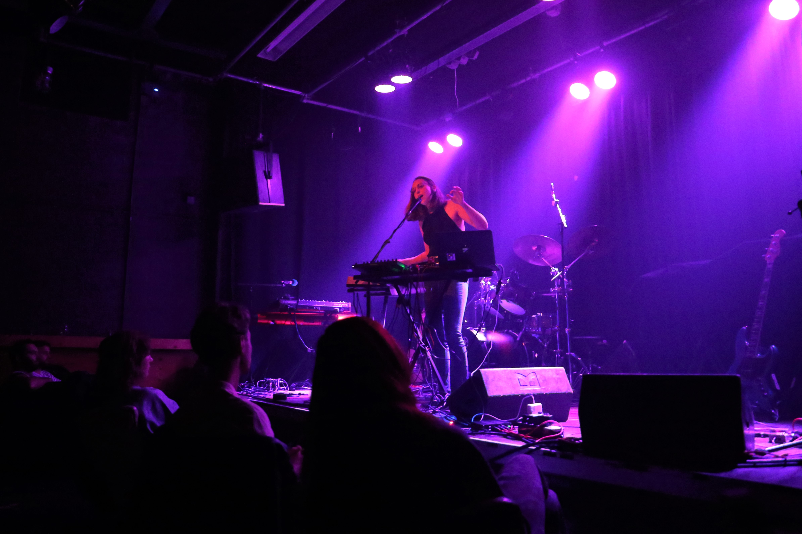
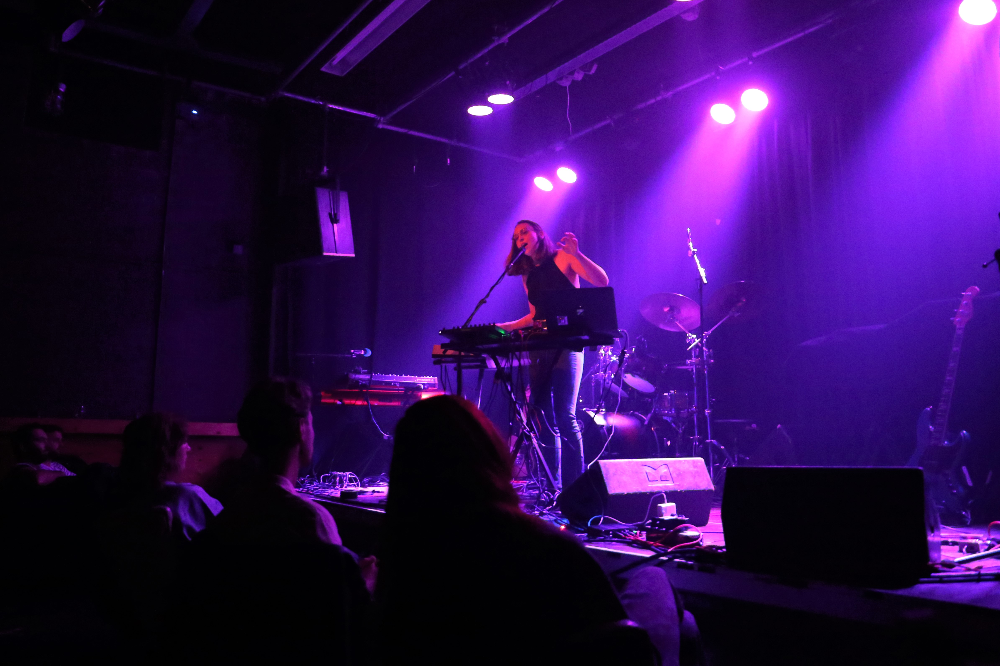

Uit meer dan 1000 aanmeldingen ben ik als artiest geselecteerd voor de Popronde 2020, waarvoor ik onder andere heb opgetreden in Cinetol, Amsterdam.

Bron: https://popronde.nl/profiel/11090/2020
Popronde optreden in Cinetol, Amsterdam.
Welkom op mijn portefolio pagina. Mijn naam is Kayleigh en ik heb een grote passie voor muziek. Van kinds af aan ben ik al bezig met muziek schrijven, in bands spelen, produceren en optreden. Ik zing en speel (bas)gitaar, toetsen, percussie en harp. Tijdens mijn masteropleiding aan de kunstacademie heb ik me gespecialiseerd in elektronische muziek. Na veel optredens, deelname aan de Popronde, en het uitbrengen van een album, ben ik me gaan focussen op lesgeven. Zo ben ik docent geweest bij de Hanzehogeschool, en geef ik nu muziekworkshops aan kinderen tussen de 8 en 15 jaar oud. Ook begeleid ik artiesten met het produceren en uitbrengen van eigen muziek. Ik werk als zelfstandig ondernemer en vind het fantastisch om deze passie met anderen te delen. Hieronder staat een chronologisch overzicht met meer informatie en media over mijn muzikale carrière.
Momenteel werk ik wekelijks bij GROND, een school in de Drenthse bossen. Ik geef daar voornamelijk muziekworkshops aan kinderen tussen de 8 en 15 jaar oud. De kinderen zijn ontzettend enthousiast over muziek maken en zingen. Reactie van een collega: "wat is het eigenlijk toch fijn dat we samen zingen".
Op de foto hieronder geef ik een zangworkshop aan een kleine groep kinderen bij GROND, waarbij ik begeleid op de harmonium.
Vanwege mijn achtergrond in de ICT heb ik ruim een jaar gewerkt als docent bij de opleiding HBO-ICT aan de Hanzehogeschool in Groningen. Ik ontwikkelde en verzorgde programmeerlessen en begeleidde de studenten in hun studiepad. Ook was ik via de Hanzehogeschool betrokken bij een project waar ik een Micro:bit muziekworkshop ontwikkelde voor kinderen.
In onderstaande video zie hoe ik een proefcollege programmeren geef voor de opleiding HBO-ICT.
In 2020 heb ik mijn debuutalbum Ocean's Pulse geproduceerd en uitgebracht, waarbij ik veel heb geleerd over muziekproductie. Ondertussen begeleid ik als zelfstandig ondernemer anderen met het opnemen en uitbrengen van eigen muziek.
Uit meer dan 1000 aanmeldingen ben ik als artiest geselecteerd voor de Popronde 2020, waarvoor ik onder andere heb opgetreden in Cinetol, Amsterdam.
Bron: https://popronde.nl/profiel/11090/2020
Popronde optreden in Cinetol, Amsterdam.
Als one-woman-band bespeel ik zelf alle instrumenten en sta ik alleen op het podium.
“Hoewel de muziek van Kayleigh Beard uit Groningen niet onmiddellijk als heel
toegankelijk kan worden gekenschetst, weet ze wel prachtig en gelaagd voor hen die de moeite nemen te
luisteren een hele eigen wereld te ontsluiten met haar elektropop waarin diepe basklanken het een aards
gevoel geven. Het is intuïtief en bij tijden prachtig sereen.”
–The Next Gig
Elektronische muziek was mijn specialisatie tijdens mijn masteropleiding aan de kunstacademie (Frank Mohr Instituut / Minerva). Door te leren en experimenteren met nieuwe technologie ontwikkelde ik interactieve muziekinstallaties en ontstond mijn elektronische one-woman-band act.
Van 2012 tot 2014 was ik zangeres en toetsenist in de coverband Zinloos Geweldig. We traden op bij onder andere studentenverenigingen.
Van 2006 tot 2011 was ik zangeres en gitarist in de popband Metal Apple. We traden op bij verschillende locaties waaronder Ahoy Rotterdam.